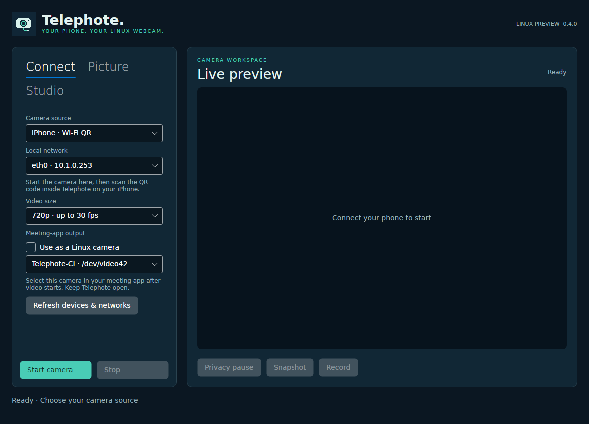

Connect your phone.
iPhone QR pairing, supported USB webcams and Android camera feeds.

NEW · LINUX PREVIEW
Bring your phone camera to Ubuntu and Linux Mint. Pair, frame your shot and record — all from one portable app.
Free desktop app. No subscriptions.
Meeting-app output requires an existing v4l2loopback device. iPhone USB requires existing usbmuxd. The app installs neither.

YOUR CAMERA. YOUR WAY.
iPhone QR pairing, supported USB webcams and Android camera feeds.
Zoom, mirror, rotate and adjust your picture. Choose available iPhone lenses.
Save snapshots and local video. Pause the picture whenever you need.
720p, 1080p or 4K targets. Available quality depends on your phone and PC.
GET STARTED
Keep the complete folder together.
Run ./Start-Telephote.sh.
Choose your input and start the camera.
BEFORE YOU DOWNLOAD
The app installs no drivers or services. Preview and recording work without a loopback device. Linux updates are manual.
Full requirements & setup →Free Linux companion. No subscriptions.